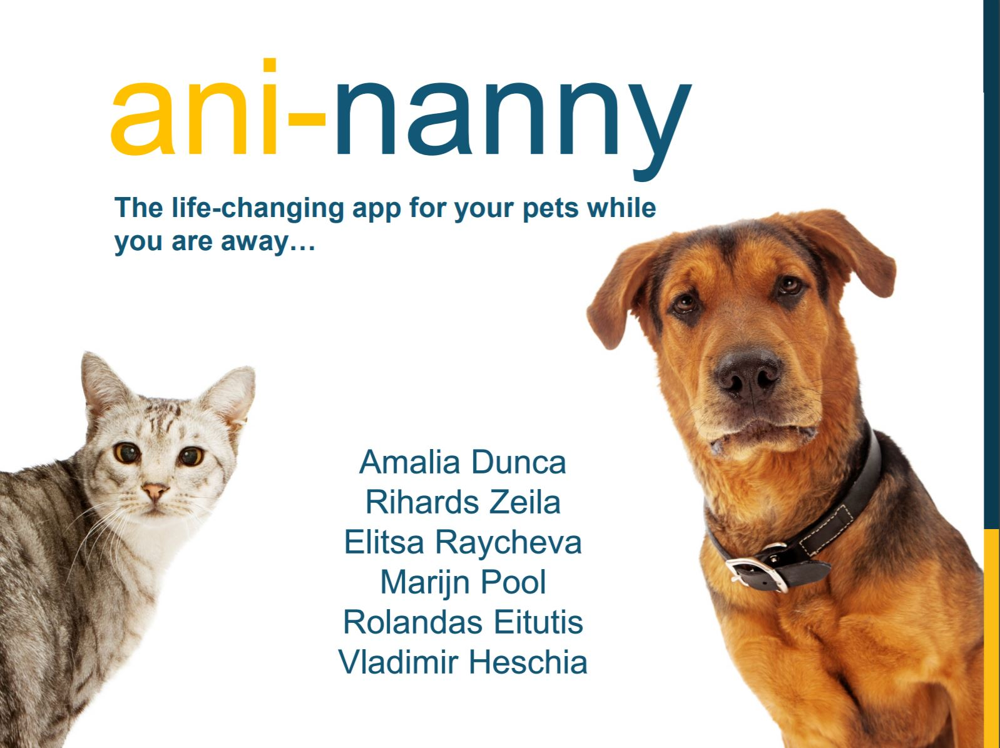
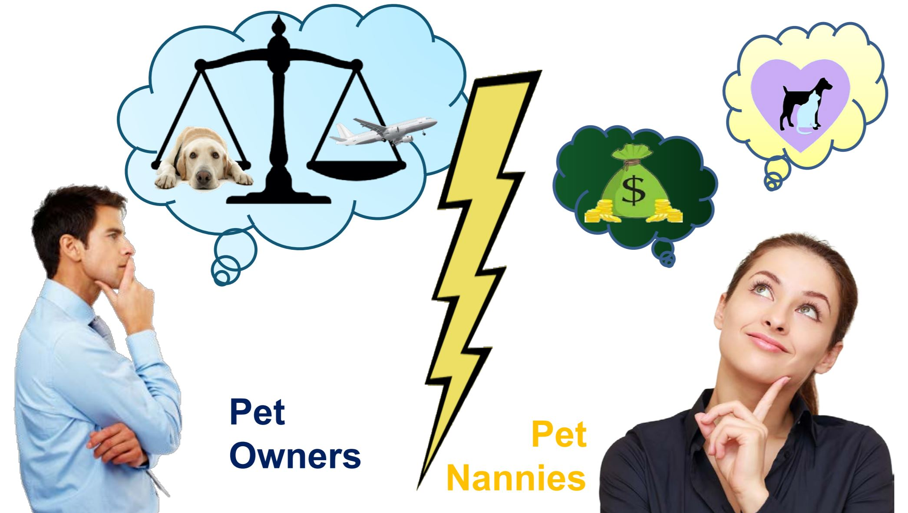
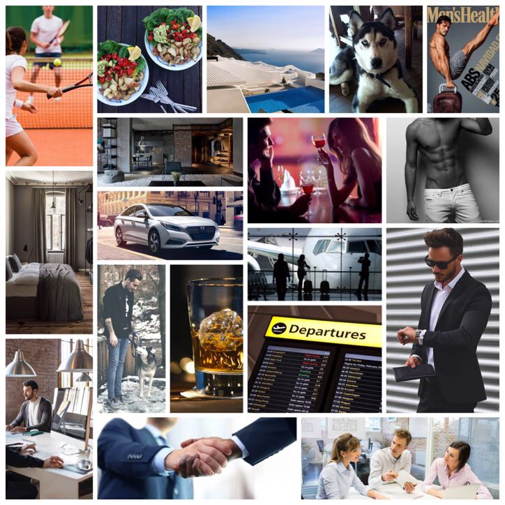

Digital Business: Any-nanny app
I loved this theme because of it’s close connection to the real business world. Most of the information was new for me, but I found it very useful for my business development skills. It opened my mindset, made me think in an innovative way in order my ideas to compete in this world, flooded with ideas and information.
I was introduced to a lot of tools and methods for a successful development of the digital service agency. Another important part was making your idea happen: creating the visual identity of your product, analyzing the market and your potential users, communicating the design, crossing things out if not relevant, continuing to brainstorm, coming up with other solutions or ideas, finding sponsors and funding for the realization of your project, advertising it. Another closely related feature was that through the whole theme we worked as a group, and all ideas were discussed and had to be accepted by the majority, rather than taking independent decisions. We also applied the scrum master technique and kanban way of dealing with tasks.
We chose to bring to life an app where you can find a nanny for your pet while you are away or respectively become a pet-nanny and get paid. We clarified our mission, vision and values, created the style guide and our visual identity and came up with a logo for our digital service. After a trunk test of who our potential users will be, we concluded that most of them will be singles under 35, creating detailed physical and psychological background profiles and persona collages. We careful discussed and made our business model canvas, using creative thinking techniques, introduced through a game. Then we followed an exemplary persona journey and respectively their journey through the app, using paper prototypes. In the end we made the digital prototype for the app and coded the website.
Target audience collage: Persona 1
Since most of the time we did the things as a group it’s hard to tell who did what. My greatest contribution was in conducting the persona examinations, then creating persona journey as a pet owner, paper prototypes of the digital journey through the app, final documentations and pitch presentation.